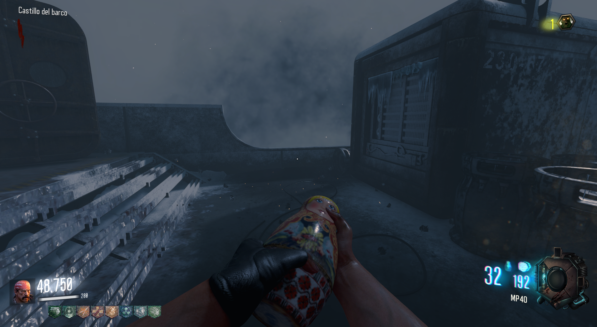
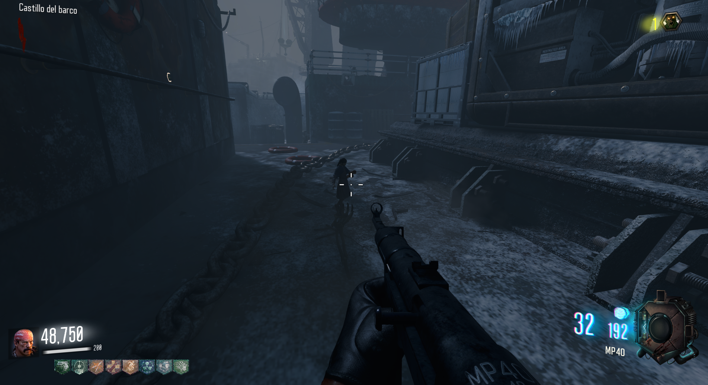

Granadas Matrioshka (Call of the Dead)

Para obtener las granada deberemos de hacer lo siguiente.
El primer paso es ir al cuarto del Jügger-Nog e interactuar con el botón rojo.

Luego tendremos que presionar 4 botones que se encienden de manera aleatoria y solo tendremos un tiempo para hacerlo.

Frente al botón rojo del inicio.

Al lado de las escaleras que van al Jügger-Nog.

En la sala contraria, a la izquierda.

Siguiendo este último camino, bajo la cubierta.

Cuando la grúa tenga la caja, lanzaremos una granada (recomiendo Sémtex) que la romperá.

La muñeca de Samantha caerá y tendremos que interactuar con ella.

Después 5 muñecas aleatorias aparecerán por el mapa y tendremos que dispararles en un tiempo determinado.
De las muñecas sonará una caja de música que nos guiará hasta ellas.
Localizaciñon de todas las muñecas:


Esta nos dará las granadas Matrioshka.
